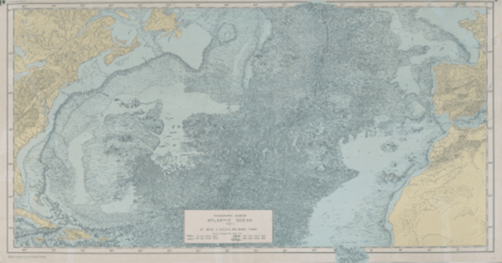

Until 1957, most of the public believed that the bottom of the ocean was a flat featureless expanse of sand, stretching endlessly around the globe. Then the first relief map of the Atlantic Ocean floor brought its dynamic contours to light. That year, American scientists Marie Tharp and her long-time collaborator Bruce C. Heezen used sonar data to plot, for the first time, the Atlantic floor’s rugged terrain, roiling with jagged crests and ridges, yawning valleys, and expansive plateaus.
That map, shown here, was created in the style of a so-called physiographic diagram, which typically depicts geological features from above and to the side, as though viewed from a small airplane flying overhead. Though physiographic diagrams can instantly convey an area’s three-dimensional character, they are not generally useful for navigation. Due to gaps in the data, the map that Tharp and Heezen created was also partially speculative. Tharp had to rely on her training as a geologist to fill in the blanks, making educated guesses about some of the thrilling contours of the mid Atlantic ridge, towering nearly 10,000 feet above the surrounding seafloor; the Azores Plateau, stretching some 2.2 million square miles; and a previously mysterious chain of seamounts south of the Azores archipelago.

FATHOMING THE DEPTHS: Physiographic Diagram of the Atlantic Ocean, Sheet 1. Bruce C. Heezen and Marie Tharp, 1957. Geography and Map Division.
Tharp and Dezeen’s first map of the Atlantic seafloor ultimately played an important role in the widespread acceptance of the theories of plate tectonics and continental drift, which were first proposed by Alfred Wegner in 1912. While creating their map, Tharp and Heezen overlaid seismic and earthquake data onto their diagram of topography, which revealed that many of the globe’s earthquakes had occurred along the mid Atlantic ridge.
Tharp and Heezen describe some of the difficulties of creating their map in their 1959 book, The Floors of the Oceans: I. The North Atlantic. When making a map of a terrestrial landscape, the shapes of mountains and valleys is a “matter of recorded fact,” they write, so the challenge is to choose which features to represent and which to leave aside. But at sea, so much of the landscape is hidden under fathoms, so there is a lot more guesswork.
The Cold War provided one motivation for the style of map that Tharp and Heezen chose to create, according to a recent Library of Congress blog. A lot of the data they relied on was classified, and the physiographic map was a way to convey that data in an approximate way, without giving away state secrets.
Tharp and Heezen created many more maps of the ocean floor together over the years, using newly available data and filling the rest in, with their imaginations. 
Lead image: Geography and Map Division